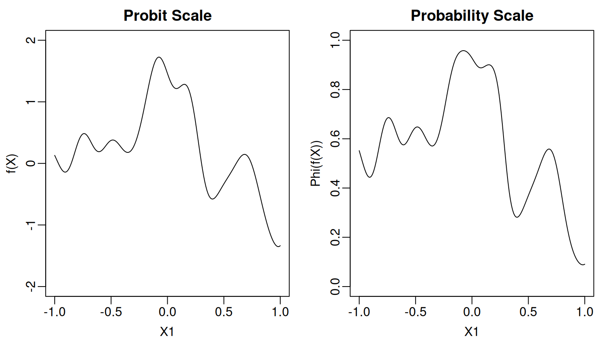
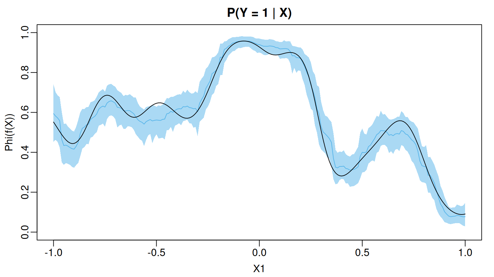

f_true <- function(df){
stopifnot(all(abs(df[,1]) <= 1))
set.seed(517)
D <- 5000
omega0 <- rnorm(n = D, mean = 0, sd = 1.5)
b0 <- 2 * pi * runif(n = D, min = 0, max = 1)
weights <- rnorm(n = D, mean = 0, sd = 2*1/sqrt(D))
u <- 5*df[,1] # re-scale x1 to [-5,5]
if(length(u) == 1){
phi <- sqrt(2) * cos(b0 + omega0*u)
out <- sum(weights * phi)
} else{
phi_mat <- matrix(nrow = length(u), ncol = D)
for(d in 1:D){
phi_mat[,d] <- sqrt(2) * cos(b0[d] + omega0[d] * u)
}
out <- phi_mat %*% weights
}
return(out/2.5)
}Probit Regression
The probit BART model asserts that where is the cumulative distribution function of the standard normal and approximates the unknown function with a regression tree ensemble. In the original BART paper, Chipman et al. sampled from the probit BART posterior using a Gibbs sampler based on the standard Albert & Chib (1993) data augmentation strategy. Specifically, they introduce a latent variable such that They then sampled from the posterior induced by this augmented model using a Gibbs sampler which alternated between drawing new values of the latent ’s conditionally on the regression trees and updating the regression trees conditionally given the latent variables.
When run with the additional argument family = binomial(link="probit"), the function flexBART() implements this sampler based on data augmentation.
To demonstrate, we will generate observations from a probit BART model where the unknown function only depends on We construct using random Fourier features and scale so that it does not take values outside the range [-2,2].
Here is what the function and the corresponding probability function look like.
Code
par(mar = c(3,3,2,1), mgp = c(1.8, 0.5, 0), mfrow = c(1,2))
x_grid <- seq(-1, 1, by = 0.01)
f_grid <- f_true(data.frame(X1 = x_grid))
p_grid <- pnorm(f_grid)
plot(1, type = "n", xlim = c(-1,1), ylim = c(-2,2),
xlab = "X1", ylab = "f(X)", main = "Probit Scale")
lines(x_grid, f_grid)
plot(1, type = "n", xlim = c(-1,1), ylim = c(0,1),
xlab = "X1", ylab = "Phi(f(X))", main = "Probability Scale")
lines(x_grid, p_grid)
We generate training observations where the first predictor is drawn uniformly from the interval We additionally draw nine irrelevant predictors from the same distribution.
set.seed(105)
n_train <- 5000
p_cont <- 10
train_data <- data.frame(Y = rep(NA, times = n_train))
for(j in 1:p_cont) train_data[[paste0("X", j)]] <- runif(n = n_train, min = -1, max = 1)
f_train <- f_true(train_data[,paste0("X", 1:p_cont)])
prob_train <- pnorm(f_train)
train_data$Y <- rbinom(n = n_train, size = 1, prob = prob_train)When run with the argument family=binomial(link="probit"), the function flexBART() outputs an object that, like the function pbart() from the BART package, with an attribute prob.train.mean, which contains the posterior means of the ’s. When save_samples = TRUE (the default setting), the output also includes the attribute prob.train, which is a matrix containing the posterior samples of the values. The rows of prob.trainindex MCMC draws and the columns indexes observations in the training dataset. When used to fit a probit BART model, flexBART() does not return posterior means or samples of the ’s, as these can be computed directly from the outputted probabilities.
The coverage of the pointwise 95% posterior credible intervals for evaluated at the training observations is higher-than-nominal.
train_quantiles <-
apply(fit$prob.train, MARGIN = 2,
FUN = quantile,
probs = c(0.025, 0.975)) |>
t() |>
as.data.frame()
mean( prob_train >= train_quantiles[,"2.5%"] & prob_train <= train_quantiles[,"97.5%"])
#> [1] 0.9596Since the true function depends only on we can visualize the posterior mean and uncertainty intervals as a function of To this end, we create a second data set in which the values are evenly spaced between -1 and 1 and the values of the remaining, irrelevant predictors are drawn uniformly from the interval [-1,1]. We then use predict() to draw posterior samples of evaluated at these new observations. For basic probit BART models, predict() returns a matrix of posterior draws where the rows (resp. columns) index MCMC samples (resp. observations).
x_grid <- seq(-1,1, by = 0.01)
test_data <- data.frame(X1 = x_grid)
for(j in 2:p_cont) test_data[[paste0("X",j)]] <- runif(n = length(x_grid), min = -1, max = 1)
prob_test <- pnorm(f_true(test_data))
pred <- predict(fit, newdata = test_data)
grid_summary <-
data.frame(
MEAN = apply(pred, MARGIN = 2, FUN = mean),
L95 = apply(pred, MARGIN = 2, FUN = quantile, probs = 0.025),
U95 = apply(pred, MARGIN = 2, FUN = quantile, probs = 0.975))We see that the posterior mean of $\Phi(f(\boldsybmol{\mathbf{X}}))$ closely tracks the actual function and most of the pointwise 95% credible intervals cover the actual function values
Code
oi_colors <- palette.colors(palette = "Okabe-Ito")
par(mar = c(3,3,2,1), mgp = c(1.8, 0.5, 0))
plot(1, type = "n", xlim = c(-1,1), ylim = c(0,1),
xlab = "X1", ylab = "Phi(f(X))", main = "P(Y = 1 | X)")
polygon(x = c(x_grid, rev(x_grid)),
y = c(grid_summary$L95, rev(grid_summary$U95)),
col = adjustcolor(oi_colors[3], alpha.f = 0.5),
border = NA)
lines(x_grid, grid_summary$MEAN, col = oi_colors[3])
lines(x_grid, prob_test)
At least for these data, the only predictor whose marginal posterior inclusion probability exceeds 50% is The irrelevant predictors all have inclusion probabilities much less than that.